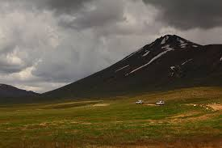

Hunza
Buddhism and, to a lesser extent, Bön were the primary religions in the area. The region holds several surviving Buddhist archaeological sites, such as the Sacred Rock of Hunza. Hunza Valley was central in the network of trading routes connecting Central Asia to the subcontinent. It also provided protection to Buddhist missionaries and monks visiting the subcontinent, and the region played a significant role in the transmission of Buddhism throughout Asia the region played a significant role in the transmission of Buddhism throughout Asia. Click For More Details
GilGit
Gilgit is a city in Pakistani-administered Gilgit–Baltistan in the disputed Kashmir region.It is the capital of the Gilgit-Baltistan region. The city is located in a broad valley near the confluence of the Gilgit and the Hunza rivers. It is a major tourist destination in Pakistan, serving as a hub for trekking and mountaineering expeditions in the Karakoram mountain range. Gilgit was once a major centre for Buddhism; it was an important stop on the ancient Silk Road, and today serves as a major junction along the Karakoram Highway with road connections to China as well as the Pakistani cities of Skardu, Chitral, Peshawar, and Islamabad. Currently, it serves as a frontier station for the local tribal areas. Click For More Details

Skardu
The name "Skardu" is believed to be derived from the Balti word meaning "a lowland between two high places."[5] The two referenced "high places" are Shigar city, and the high-altitude Satpara Lake[5] Local people might tend to write the name as སྐར་དོ་ according to how they pronounce it. But the meaning of which, as stated above, corresponds to the Tibetan word མདོ. In the course of the history of Balti, bilabial sound /m/ as a prefix has been lost, and the vowel /o/ has turned into /u/, the same as many other dialects of Tibetan.In the course of the history of Balti, bilabial sound /m/ as a prefix has been lost, and the vowel /o/ has turned into /u/, the same as many other dialects of Tibetan. Click For More Details


Deosai
Deosai National Park is located in Western Himalayas in Gilgit Baltistan, Pakistan. It has an average elevation of 4,114 metres (13,497 ft) above sea level, making the Deosai Plains the second highest plateau in the world after Changtang Tibetan Plateau. The park protects an area of 843 square kilometres (325 sq mi). It is well known for its rich flora and fauna of the Karakoram-West Tibetan Plateau alpine steppe eco-region. In spring, it is covered by sweeps of wildflowers and a wide variety of butterflies. Click For More Details